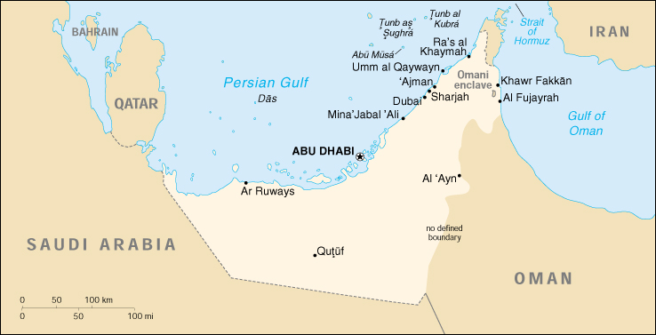

|
United Arab Emirates | |
| Introduction Geography People Government Economy Communications Transportation Military Transnational Issues | ||
|  | ||
| United Arab Emirates | Introduction | Top of Page |
| Background: | The Trucial States of the Persian Gulf coast granted the UK control of their defense and foreign affairs in 19th century treaties. In 1971, six of these states - Abu Zaby, 'Ajman, Al Fujayrah, Ash Shariqah, Dubayy, and Umm al Qaywayn - merged to form the UAE. They were joined in 1972 by Ra's al Khaymah. The UAE's per capita GDP is not far below those of the leading West European nations. Its generosity with oil revenues and its moderate foreign policy stance have allowed it to play a vital role in the affairs of the region. |
| United Arab Emirates | Geography | Top of Page |
| Location: | Middle East, bordering the Gulf of Oman and the Persian Gulf, between Oman and Saudi Arabia |
| Geographic coordinates: | 24 00 N, 54 00 E |
| Map references: | Middle East |
| Area: |
total:
82,880 sq km
land: 82,880 sq km water: 0 sq km |
| Area - comparative: | slightly smaller than Maine |
| Land boundaries: |
total:
867 km
border countries: Oman 410 km, Saudi Arabia 457 km |
| Coastline: | 1,318 km |
| Maritime claims: |
contiguous zone:
24 NM
continental shelf: 200 NM or to the edge of the continental margin exclusive economic zone: 200 NM territorial sea: 12 NM |
| Climate: | desert; cooler in eastern mountains |
| Terrain: | flat, barren coastal plain merging into rolling sand dunes of vast desert wasteland; mountains in east |
| Elevation extremes: |
lowest point:
Persian Gulf 0 m
highest point: Jabal Yibir 1,527 m |
| Natural resources: | petroleum, natural gas |
| Land use: |
arable land:
0%
permanent crops: 0% permanent pastures: 2% forests and woodland: 0% other: 98% (1993 est.) |
| Irrigated land: | 50 sq km (1993 est.) |
| Natural hazards: | frequent sand and dust storms |
| Environment - current issues: | lack of natural freshwater resources being overcome by desalination plants; desertification; beach pollution from oil spills |
| Environment - international agreements: |
party to:
Biodiversity, Climate Change, Desertification, Endangered Species, Hazardous Wastes, Marine Dumping, Ozone Layer Protection
signed, but not ratified: Law of the Sea |
| Geography - note: | strategic location along southern approaches to Strait of Hormuz, a vital transit point for world crude oil |
| United Arab Emirates | People | Top of Page |
| Population: |
2,407,460
note: includes 1,576,472 non-nationals (July 2001 est.) |
| Age structure: |
0-14 years:
28.86% (male 354,298; female 340,498)
15-64 years: 68.74% (male 1,047,839; female 607,020) 65 years and over: 2.4% (male 40,626; female 17,179) (2001 est.) |
| Population growth rate: | 1.59% (2001 est.) |
| Birth rate: | 18.11 births/1,000 population (2001 est.) |
| Death rate: | 3.79 deaths/1,000 population (2001 est.) |
| Net migration rate: | 1.61 migrant(s)/1,000 population (2001 est.) |
| Sex ratio: |
at birth:
1.05 male(s)/female
under 15 years: 1.04 male(s)/female 15-64 years: 1.73 male(s)/female 65 years and over: 2.36 male(s)/female total population: 1.5 male(s)/female (2001 est.) |
| Infant mortality rate: | 16.68 deaths/1,000 live births (2001 est.) |
| Life expectancy at birth: |
total population:
74.29 years
male: 71.84 years female: 76.86 years (2001 est.) |
| Total fertility rate: | 3.23 children born/woman (2001 est.) |
| HIV/AIDS - adult prevalence rate: | 0.18% (1999 est.) |
| HIV/AIDS - people living with HIV/AIDS: | NA |
| HIV/AIDS - deaths: | NA |
| Nationality: |
noun:
Emirati(s)
adjective: Emirati |
| Ethnic groups: |
Emirati 19%, other Arab and Iranian 23%, South Asian 50%, other expatriates (includes Westerners and East Asians) 8% (1982)
note: less than 20% are UAE citizens (1982) |
| Religions: | Muslim 96% (Shi'a 16%), Christian, Hindu, and other 4% |
| Languages: | Arabic (official), Persian, English, Hindi, Urdu |
| Literacy: |
definition:
age 15 and over can read and write
total population: 79.2% male: 78.9% female: 79.8% (1995 est.) |
| United Arab Emirates | Government | Top of Page |
| Country name: |
conventional long form:
United Arab Emirates
conventional short form: none local long form: Al Imarat al Arabiyah al Muttahidah local short form: none former: Trucial Oman, Trucial States abbreviation: UAE |
| Government type: | federation with specified powers delegated to the UAE federal government and other powers reserved to member emirates |
| Capital: | Abu Dhabi |
| Administrative divisions: | 7 emirates (imarat, singular - imarah); Abu Zaby (Abu Dhabi), 'Ajman, Al Fujayrah, Ash Shariqah (Sharjah), Dubayy (Dubai), Ra's al Khaymah, Umm al Qaywayn |
| Independence: | 2 December 1971 (from UK) |
| National holiday: | Independence Day, 2 December (1971) |
| Constitution: | 2 December 1971 (made permanent in 1996) |
| Legal system: | federal court system introduced in 1971; all emirates except Dubayy (Dubai) and Ra's al Khaymah have joined the federal system; all emirates have secular and Islamic law for civil, criminal, and high courts |
| Suffrage: | none |
| Executive branch: |
chief of state:
President ZAYID bin Sultan Al Nuhayyan (since 2 December 1971), ruler of Abu Zaby (Abu Dhabi) (since 6 August 1966) and Vice President MAKTUM bin Rashid al-Maktum (since 8 October 1990), ruler of Dubayy (Dubai)
head of government: Prime Minister MAKTUM bin Rashid al-Maktum (since 8 October 1990), ruler of Dubayy (Dubai); Deputy Prime Minister SULTAN bin Zayid Al Nuhayyan (since 20 November 1990) cabinet: Council of Ministers appointed by the president note: there is also a Federal Supreme Council (FSC) which is composed of the seven emirate rulers; the council is the highest constitutional authority in the UAE; establishes general policies and sanctions federal legislation, Abu Zaby (Abu Dhabi) and Dubayy (Dubai) rulers have effective veto power; meets four times a year elections: president and vice president elected by the FSC (a group of seven electors) for five-year terms; election last held NA October 1996 (next to be held NA October 2001); prime minister and deputy prime minister appointed by the president election results: ZAYID bin Sultan Al Nuhayyan reelected president; percent of FSC vote - NA, but believed to be unanimous; MAKTUM bin Rashid al-Maktum elected vice president; percent of FSC vote - NA%, but believed to be unanimous |
| Legislative branch: |
unicameral Federal National Council or Majlis al-Ittihad al-Watani (40 seats; members appointed by the rulers of the constituent states to serve two-year terms)
elections: none note: reviews legislation, but cannot change or veto |
| Judicial branch: | Union Supreme Court (judges are appointed by the president) |
| Political parties and leaders: | none |
| Political pressure groups and leaders: | NA |
| International organization participation: | ABEDA, AFESD, AL, AMF, CAEU, CCC, ESCWA, FAO, G-77, GCC, IAEA, IBRD, ICAO, ICRM, IDA, IDB, IFAD, IFC, IFRCS, IHO, ILO, IMF, IMO, Inmarsat, Intelsat, Interpol, IOC, ISO, ITU, NAM, OAPEC, OIC, OPCW, OPEC, UN, UNCTAD, UNESCO, UNIDO, UPU, WHO, WIPO, WMO, WTrO |
| Diplomatic representation in the US: |
chief of mission:
Ambassador Asri Said Ahmad al-DHAHIRI
chancery: Suite 700, 1255 22nd Street NW, Washington, DC 20037 telephone: [1] (202) 955-7999 |
| Diplomatic representation from the US: |
chief of mission:
Ambassador Theodore H. KATTOUF
embassy: Al-Sudan Street, Abu Dhabi mailing address: P. O. Box 4009, Abu Dhabi; American Embassy Abu Dhabi, Department of State, Washington, DC 20521-6010 (pouch); note - work week is Saturday through Wednesday telephone: [971] (2) 4436691 FAX: [971] (2) 4435441 consulate(s) general: Dubai |
| Flag description: | three equal horizontal bands of green (top), white, and black with a thicker vertical red band on the hoist side |
| United Arab Emirates | Economy | Top of Page |
| Economy - overview: | The UAE has an open economy with a high per capita income and a sizable annual trade surplus. Its wealth is based on oil and gas output (about 33% of GDP), and the fortunes of the economy fluctuate with the prices of those commodities. Since 1973, the UAE has undergone a profound transformation from an impoverished region of small desert principalities to a modern state with a high standard of living. At present levels of production, oil and gas reserves should last for more than 100 years. Despite higher oil revenues in 1999-2000, the government has not drawn back from the economic reforms implemented during the 1998 oil price depression. The government has increased spending on job creation and infrastructure expansion and is opening up its utilities to greater private-sector involvement. |
| GDP: | purchasing power parity - $54 billion (2000 est.) |
| GDP - real growth rate: | 4% (2000 est.) |
| GDP - per capita: | purchasing power parity - $22,800 (2000 est.) |
| GDP - composition by sector: |
agriculture:
3%
industry: 52% services: 45% (1996 est.) |
| Population below poverty line: | NA% |
| Household income or consumption by percentage share: |
lowest 10%:
NA%
highest 10%: NA% |
| Inflation rate (consumer prices): | 4.5% (2000 est.) |
| Labor force: |
1.4 million (1998 est.)
note: 75% of the population in the 15-64 age group is non-national (July 1998 est.) |
| Labor force - by occupation: | services 60%, industry 32%, agriculture 8% (1996 est.) |
| Unemployment rate: | NA% |
| Budget: |
revenues:
$6.5 billion
expenditures: $7.3 billion, including capital expenditures of $NA (2000 est.) |
| Industries: | petroleum, fishing, petrochemicals, construction materials, some boat building, handicrafts, pearling |
| Industrial production growth rate: | 4% (2000) |
| Electricity - production: | 36.7 billion kWh (1999) |
| Electricity - production by source: |
fossil fuel:
100%
hydro: 0% nuclear: 0% other: 0% (1999) |
| Electricity - consumption: | 34.131 billion kWh (1999) |
| Electricity - exports: | 0 kWh (1999) |
| Electricity - imports: | 0 kWh (1999) |
| Agriculture - products: | dates, vegetables, watermelons; poultry, eggs, dairy products; fish |
| Exports: | $46 billion (f.o.b., 2000 est.) |
| Exports - commodities: | crude oil 45%, natural gas, reexports, dried fish, dates |
| Exports - partners: | Japan 30%, India 7%, Singapore 6%, South Korea 4%, Oman, Iran (1999) |
| Imports: | $34 billion (f.o.b., 2000 est.) |
| Imports - commodities: | machinery and transport equipment, chemicals, food |
| Imports - partners: | Japan 9%, US 8%, UK 8%, Italy 6%, Germany, South Korea (1999) |
| Debt - external: | $12.6 billion (2000 est.) |
| Economic aid - recipient: | $NA |
| Currency: | Emirati dirham (AED) |
| Currency code: | AED |
| Exchange rates: | Emirati dirhams per US dollar - central bank mid-point rate: 3.6725 (since 1998); 3.6711 (1997), 3.6710 (1995-96) |
| Fiscal year: | calendar year |
| United Arab Emirates | Communications | Top of Page |
| Telephones - main lines in use: | 915,223 (1998) |
| Telephones - mobile cellular: | 1 million (1999) |
| Telephone system: |
general assessment:
modern system consisting of microwave radio relay and coaxial cable; key centers are Abu Dhabi and Dubai
domestic: microwave radio relay and coaxial cable international: satellite earth stations - 3 Intelsat (1 Atlantic Ocean and 2 Indian Ocean) and 1 Arabsat; submarine cables to Qatar, Bahrain, India, and Pakistan; tropospheric scatter to Bahrain; microwave radio relay to Saudi Arabia |
| Radio broadcast stations: | AM 13, FM 7, shortwave 2 (1998) |
| Radios: | 820,000 (1997) |
| Television broadcast stations: | 15 (1997) |
| Televisions: | 310,000 (1997) |
| Internet country code: | .ae |
| Internet Service Providers (ISPs): | 1 (2000) |
| Internet users: | 400,000 (2000) |
| United Arab Emirates | Transportation | Top of Page |
| Railways: | 0 km |
| Highways: |
total:
4,835 km
paved: 4,835 km unpaved: 0 km (1998 est.) |
| Waterways: | none |
| Pipelines: | crude oil 830 km; natural gas, including natural gas liquids, 870 km |
| Ports and harbors: | 'Ajman, Al Fujayrah, Das Island, Khawr Fakkan, Mina' Jabal 'Ali, Mina' Khalid, Mina' Rashid, Mina' Saqr, Mina' Zayid, Umm al Qaywayn |
| Merchant marine: |
total:
70 ships (1,000 GRT or over) totaling 1,094,256 GRT/1,421,333 DWT
ships by type: cargo 16, chemical tanker 3, container 17, liquefied gas 1, livestock carrier 1, passenger 1, petroleum tanker 24, roll on/roll off 6, specialized tanker 1 (2000 est.) |
| Airports: | 40 (2000 est.) |
| Airports - with paved runways: |
total:
22
over 3,047 m: 8 2,438 to 3,047 m: 3 1,524 to 2,437 m: 4 914 to 1,523 m: 3 under 914 m: 4 (2000 est.) |
| Airports - with unpaved runways: |
total:
18
over 3,047 m: 1 2,438 to 3,047 m: 1 1,524 to 2,437 m: 4 914 to 1,523 m: 9 under 914 m: 3 (2000 est.) |
| Heliports: | 2 (2000 est.) |
| United Arab Emirates | Military | Top of Page |
| Military branches: | Army, Navy, Air Force, Air Defense, paramilitary (includes Federal Police Force) |
| Military manpower - military age: | 18 years of age |
| Military manpower - availability: |
males age 15-49:
778,842
note: includes non-nationals (2001 est.) |
| Military manpower - fit for military service: | males age 15-49: 420,484 (2001 est.) |
| Military manpower - reaching military age annually: | males: 25,482 (2001 est.) |
| Military expenditures - dollar figure: | $1.6 billion (FY00) |
| Military expenditures - percent of GDP: | 3.1% (FY00) |
| United Arab Emirates | Transnational Issues | Top of Page |
| Disputes - international: | location and status of boundary with Saudi Arabia is not final, de facto boundary reflects 1974 agreement; boundary with Oman has not been bilaterally defined; northern section in the Musandam Peninsula is an administrative boundary; claims two islands in the Persian Gulf occupied by Iran: Lesser Tunb (called Tunb as Sughra in Arabic by UAE and Jazireh-ye Tonb-e Kuchek in Persian by Iran) and Greater Tunb (called Tunb al Kubra in Arabic by UAE and Jazireh-ye Tonb-e Bozorg in Persian by Iran); claims island in the Persian Gulf jointly administered with Iran (called Abu Musa in Arabic by UAE and Jazireh-ye Abu Musa in Persian by Iran) - over which Iran has taken steps to exert unilateral control since 1992, including access restrictions and a military build-up on the island; the UAE has garnered significant diplomatic support in the region in protesting these Iranian actions |
| Illicit drugs: | growing role as heroin transshipment and money-laundering center due to its proximity to southwest Asian producing countries and the bustling free trade zone in Dubai |
{kind=link}